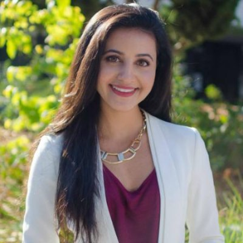
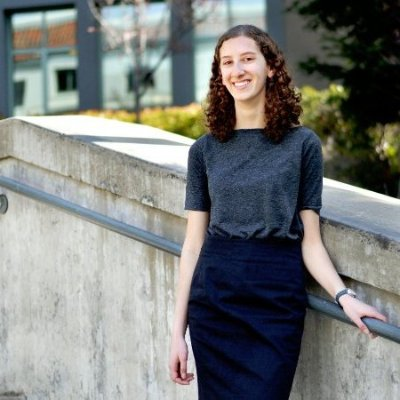

The Mechanical Team is responsible for the physical design and contstruction of the structural parts of the car. Mechanical members use 3D computer modeling tools to help design components and analyze the forces on each part. We take safety very seriously. The end result is a lightweight car which is structurally sound and capable of withstanding whatever the road throws at us.
The Business Team is responsible for establishing professionalism and good public relations in the community. Shortly after the Formula Sun Grand Prix race in the summer of 2009, CalSol Business Team was established. The Business Team is primarily responsible for acquiring sponsorship, setting up an alumni network, and establishing publicity for CalSol.
The Electrical Team, like its name suggests, is reponsible for all the electrical related issues and all the electronics. The electrical system contains many student-designed Printed Circuit Boards (PCB), and each circuit board is responsible for a specific task on the car - data collection, screen display, motor control, etc.


Click above to look at our members!
Rachel Zoll | Electrical Director
Electrical Engineering and Computer Science, Class of 2018
Rachel is a young member of the team, but is already becoming a vital asset.
She is responsible for helping to design support circuitry for all of Zephyr's electrical subsystems,
including the battery monitoring system, precharge and cutoff boards, and human-control interface.
Rachel is excited about the ASC this summer, and will be the leading electrical representative
at ASC.
Neeka Mashouf | Operations Director
Materials Engineering and Business Administration, Class of 2018
Neeka is a rising star on the CalSol team. She is in charge of the Battery
Box, as well as the leader of the operations subgroup. Neeka is also the driver of
Zephyr, making her a well rounded team member. She is always up for a challenge,
and will be put to the test this summer.
Manny Lazalde | Mechanical Team
Mechanical Engineering, Class of 2019
Manny is a a prominenet new member who has a promising future on the team.
Hailing from the small town of Simi Valley, Manny is excited to attend the
ASC Race this summmer! He is busy in the machine shop, machinining his own designed
caliper mounting brackets. Looking forward to seeing his development in the
coming future.
Felix Yoon | Program Director
Mechanical Engineering, Class of 2017
Felix is a seasoned veteran, having already participated in several ASC Races.
Although he is currently in Switzerland, Felix continues to contribute massively
to the team. He is responsible for the coordination of the ASC Race this summer,
planning all the logisitics that are needed to transport a car across the country.